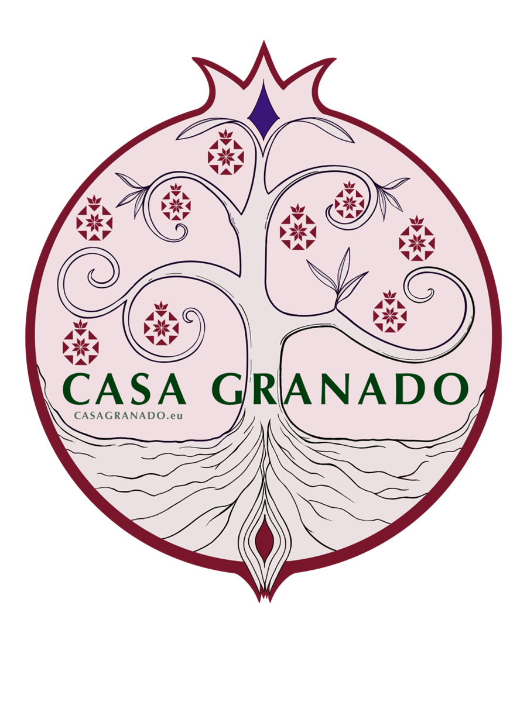
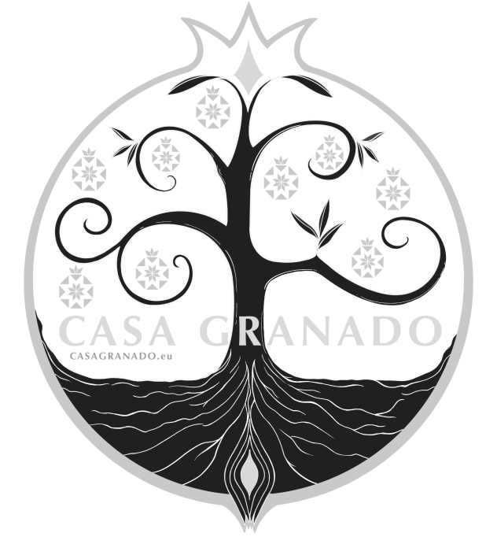
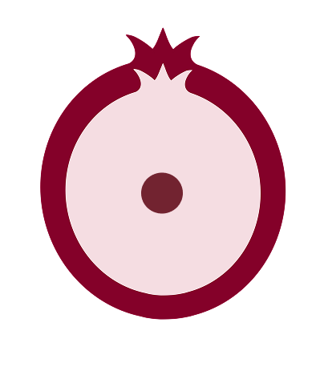
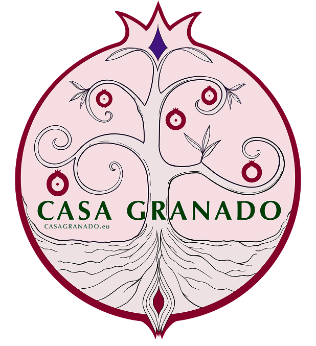
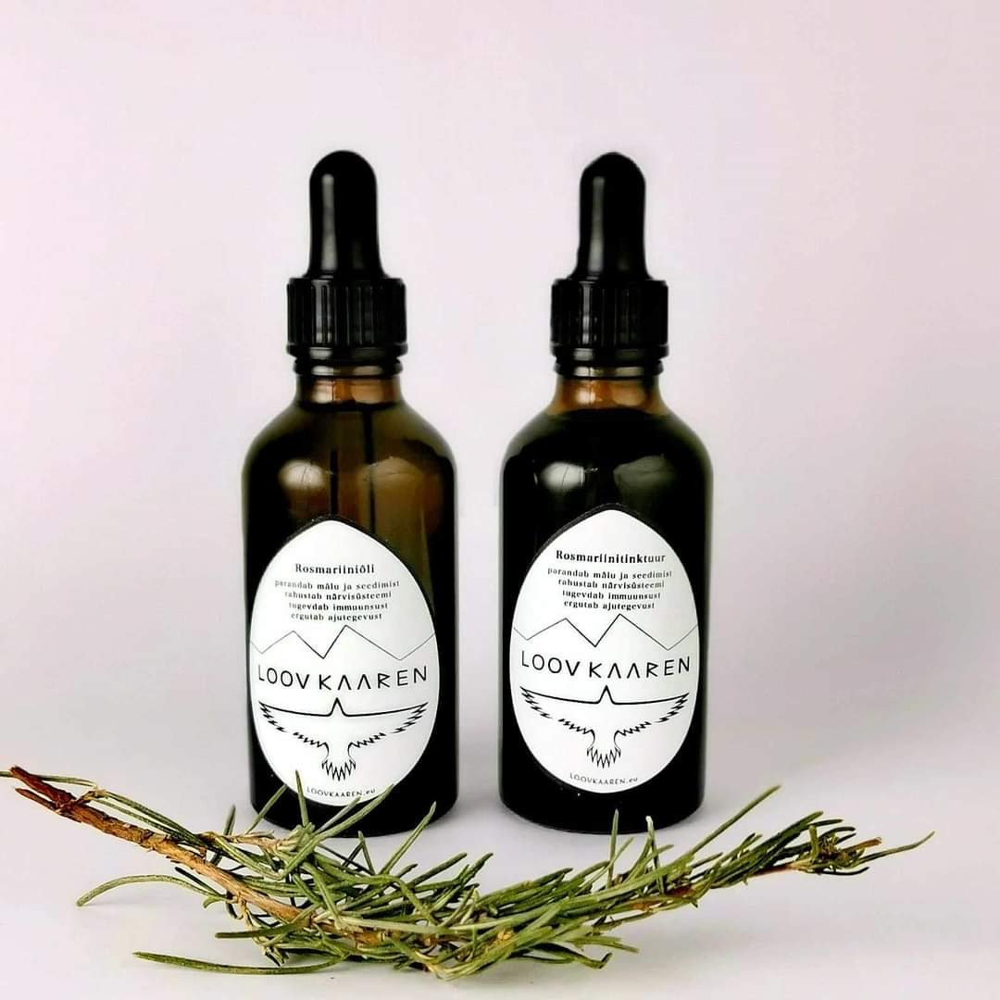
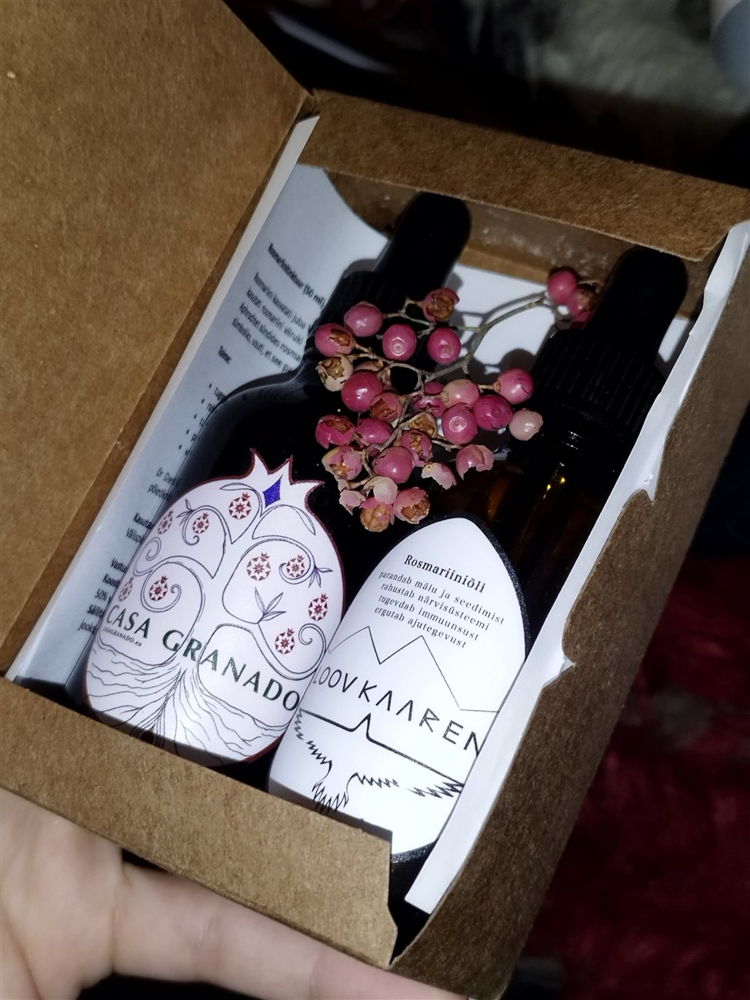
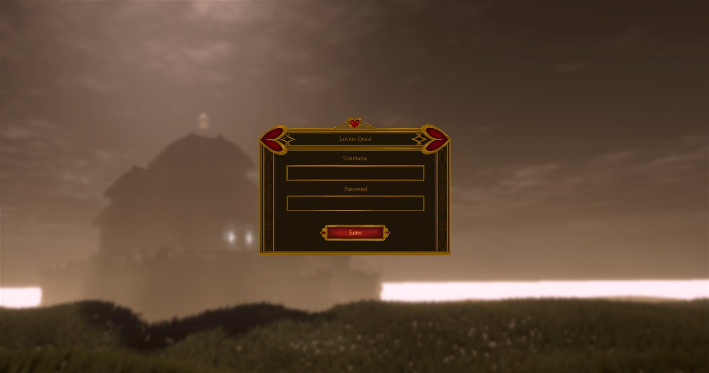
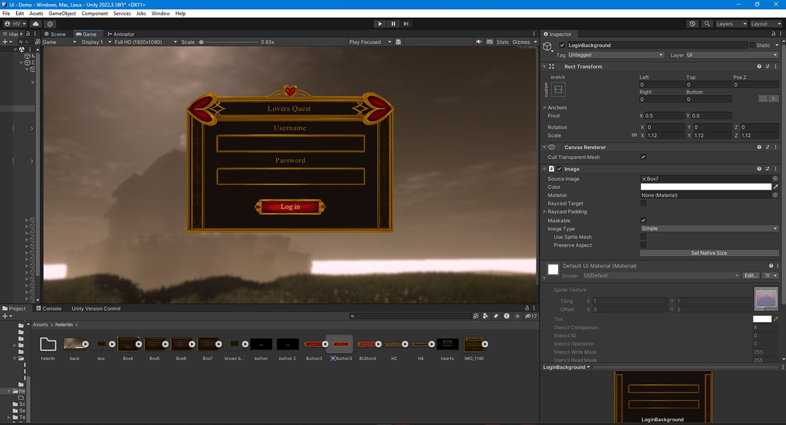

Logos & Assets

Casa Granado

Logo and the variations for Casa Granado, a guesthouse and retreat centre in Spain.



Logo & Labels



RPG Game log-in UI in Unity
A login screen designed for a Unity RPG, “Lovers Quest”. Hover or tap to swap the views.

